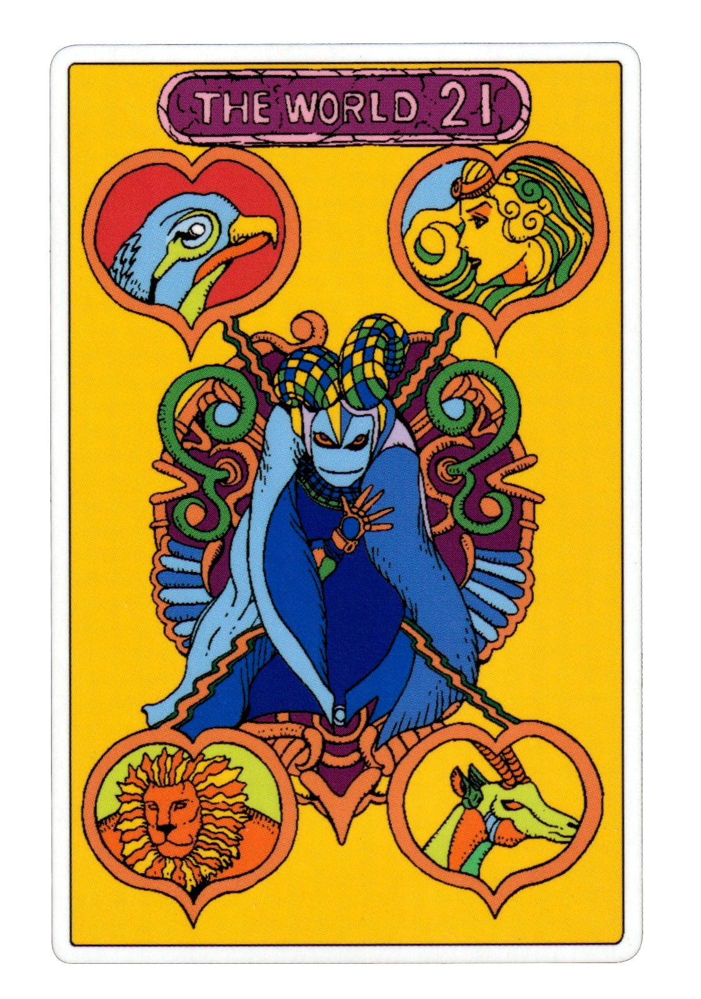
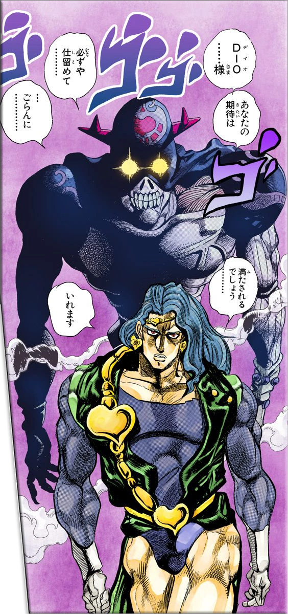

Vehicle
A vehicle (from Latin: vehiculum[1]) is a machine that transports people or cargo. Vehicles include wagons, bicycles, motor vehicles (motorcycles, cars, trucks, buses), railed vehicles (trains, trams), watercraft (ships, boats), amphibious vehicles (screw-propelled vehicle, hovercraft), aircraft (airplanes, helicopters) and spacecraft.[2]
Land vehicles are classified broadly by what is used to apply steering and drive forces against the ground: wheeled, tracked, railed or skied. ISO 3833-1977 is the standard, also internationally used in legislation, for road vehicles types, terms and definitions.[3]
JoJo Stands
The World
Stand of Dio Brando
The World is an exceptionally powerful Close-range Stand much like Star Platinum as noted by Noriaki Kakyoin and Jotaro Kujo, but boasting an effective manifestation range of approximately 10 meters.[4] Despite requiring a close distance to inflict damage, its overwhelming physical might and near unstoppable control over time undeniably make it one of the most dangerous Stands in the entire series.
Extreme Physical Power: The World possesses phenomenal strength, senses, precision, and incredible speed, being able to easily punch Kakyoin right through his abdomen. DIO claims that The World is even stronger and faster than Star Platinum since it bested the latter in a clash of rapid punches between the two.[5] However, it is unclear if this is an aspect of DIO's vampiric nature or simply having greater experience with his Stand. Its main offense is generally characterized by a flurry of speedy punches and the occasional kick.
Cream
Stand of Vanilla Ice
Cream is able to become a portal to a void-like dimension, which Vanilla Ice mainly uses to disintegrate everything in its path and hide in.
When entering its void state, Cream is invulnerable and almost undetectable as it exists in another dimension: it cannot be seen, heard, or even smelled by Iggy.[6] Despite this, Polnareff is able to detect it by scattering sand inside the room and following the trail the devouring sphere leaves.[7] The void sphere is shown to be rather fast as it was capable of pursuing Polnareff as he ran.
However, becoming a sphere has one major drawback. Although it is invisible, Vanilla Ice is also not able to sense his surroundings and must regularly take a peek, leaving himself briefly vulnerable to attack.
[1] - "vehicle, n.", OED Online, Oxford University Press, November 2010
[2] - Halsey, William D. (Editorial Director): MacMillan Contemporary Dictionary, page 1106. MacMillan Publishing, 1979. ISBN 0-02-080780-5
[3] - ISO 3833:1977 Road vehicles – Types – Terms and definitions Webstore.anis.org
[4] - Chapter 252: DIO's World, Part 6, p.12
[5] - Chapter 256: DIO's World, Part 10, pp.9-14
[6] - Chapter 240: The Miasma of the Void, Vanilla Ice, Part 3
[7] - Chapter 243: The Miasma of the Void, Vanilla Ice, Part 6